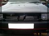
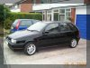

The car has a performance air filter.
The car has a new ECU after a recurrent damp starting problem was tracked down to water entering the unit at some point. Beware! Fiat wanted over £900 for a new one. He eventually tracked a Weber agent down near to him and got an exchange unit for £336 - bit of a difference.
According to the Fiat technician who services the car the best way to make the car really perform and blow everything else of the road is to go turbo. You can now pick up Lancia Thema 16v Turbo's for less than £2500 which are the same engine but with a lower compression. The engine management system etc can all be swapped over.
After replacing the ECU the steering rack broke.
In June 2000 a second hand (well two week old) set of Punto HGT wheels for £230 was bought including new nuts, locking nuts, carriage, balancing and fitting. The owner has brought a set of Fiat aftermarket wheels and didn't want the orginals any more.
At 75,000 miles the clutch slave cylinder failed.
In August 2000 the car had a new radiator fitted, belts, water pump etc etc etc. Ouch! The front plastic mesh on the grill was looking worse for wear especially after finding a chestnut lodged in it one day. The old plastic mesh was cut off still leaving the mounting clips and pressed the new stainless steel mesh into place. This was picked up for £2 from a hardware store. He has secured it with some black silicone sealant glue costing £8.

